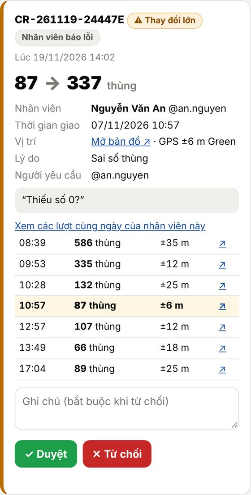

Duyệt và sửa dữ liệu bán hàngReviewing and correcting sales data
Bạn giữ cho dữ liệu chính xác: kiểm tra yêu cầu báo lỗi của nhân viên, duyệt hoặc từ chối, và sửa trực tiếp khi cần — mọi thao tác đều được ghi lại. You keep the data accurate: check the mistakes staff report, approve or reject them, and make direct fixes when needed. Every action is logged.
1Nguyên tắc quan trọngThe ground rules
| Dữ liệu gốc không bao giờ bị thay đổiThe original is never changed | Sửa = tạo một bản sửa đã duyệt bên cạnh bản gốc. Hủy = đánh dấu "Đã hủy", không xóa.A fix is an approved correction recorded next to the original. Voiding marks an entry as void; nothing is deleted. |
| Không tự duyệtNo self-approval | Bạn không thể duyệt yêu cầu do chính bạn tạo. Quản lý còn lại hoặc admin phải duyệt.You can't approve a request you created. The other manager or the admin must review it. |
| Luôn có lý doAlways give a reason | Bắt buộc khi từ chối và khi sửa trực tiếp. Nhân viên sẽ thấy lý do từ chối.Required to reject and to make a direct fix. Staff see your rejection reason. |
| Chỉ sửa được số thùngOnly the box count can change | Hoặc hủy cả mục. GPS và thời gian không bao giờ sửa được.Or the whole entry can be voided. GPS and time can never be changed. |
| Chỉ làm việc qua trang quản lýWork only through the manager page | Bạn không có quyền mở Google Sheet. Mọi thay đổi đi qua manager.html để được ghi nhật ký.You don't have access to the Google Sheet. Every change goes through manager.html so it's logged. |
2Đăng nhậpLogging in
Mở trang manager.html (link do admin gửi), dùng tên đăng nhập và mã PIN SalesData của bạn. Tài khoản phải có Role = manager. Đăng nhập mỗi ngày (hết hạn lúc nửa đêm). Dùng được trên điện thoại hoặc máy tính.
Open manager.html (the link the admin sends you) and use your SalesData username and PIN. Your account must have Role = manager. Log in each day (it ends at midnight). Works on phone or computer.
Mỗi sáng lúc 7:00, nếu có yêu cầu đang chờ, bạn sẽ nhận một email liệt kê chúng. Không có yêu cầu thì không có email.At 07:00 each morning, if requests are waiting, you get one email listing them. No requests, no email.
3Duyệt yêu cầu (tab Chờ duyệt)Reviewing requests (Pending tab)
Mỗi yêu cầu là một thẻ. Thẻ có viền cam ⚠ Thay đổi lớn (từ 200 thùng) được xếp lên đầu.Each request is a card. Cards with an orange edge marked ⚠ Large change (200 boxes or more) are listed first.


Đọc một thẻ yêu cầuReading a request card
| Thay đổiChange | Số hiện tại → số đề nghị, hoặc Hủy mục.Current number → proposed number, or Void entry. |
| NguồnSource | Nhân viên báo lỗi hoặc Quản lý sửa trực tiếp.Reported by employee or Direct fix by manager. |
| Nhân viên · Thời gian · Vị tríEmployee · Time · Location | Chi tiết lượt giao gốc. Mở bản đồ xem đúng điểm giao.Details of the original drop-off. Open map shows the exact spot. |
| Lý do · Ghi chúReason · Note | Điều người yêu cầu đã chọn và viết.What the requester chose and wrote. |
| Xem các lượt cùng ngàyShow other drop-offs that day | Liệt kê mọi lượt của nhân viên đó trong ngày (dòng tô vàng là lượt đang xét). Rất hữu ích để phát hiện mục trùng.Lists all that employee's drop-offs that day (the highlighted row is the one in question). Very useful for spotting duplicates. |
Duyệt hoặc từ chốiApprove or reject
- Kiểm traCheckXem bản đồ, các lượt cùng ngày; gọi nhân viên hoặc đại lý nếu là thay đổi lớn.Look at the map and same-day drop-offs; call the employee or distributor for large changes.
- DuyệtApproveBấm ✓ Duyệt. Ghi chú không bắt buộc.Tap ✓ Approve. A note is optional.
- Hoặc từ chốiOr rejectViết lý do vào ô ghi chú, rồi bấm ✕ Từ chối. Nhân viên sẽ đọc lý do này — viết rõ ràng, lịch sự.Write the reason in the note box, then tap ✕ Reject. The employee reads this reason, so keep it clear and polite.
Nếu thẻ ghi "Bạn tạo yêu cầu này — cần một quản lý khác hoặc admin duyệt", nút Duyệt/Từ chối sẽ không hiện. Hãy báo quản lý còn lại.If a card says "You created this request — another manager or admin must review it", there are no Approve/Reject buttons. Let the other manager know.
4Tra cứu & sửa trực tiếpSearch & direct fixes
Dùng khi bạn phát hiện lỗi mà nhân viên chưa báo, hoặc khi đã quá hạn báo lỗi.Use it when you find a mistake staff haven't reported, or when it's past their reporting deadline.
- Tìm lượt giaoFind the entryChọn khoảng ngày, nhân viên, trạng thái (đã sửa / đã hủy / đang chờ), bấm Tìm.Pick a date range, employee and status (amended / voided / pending), then tap Search.
- Bấm SửaTap FixCửa sổ hiện lịch sử sửa của mục đó (nếu có).The window shows that entry's correction history, if any.
- Chọn loại sửaChoose the fixSửa số thùng (nhập số đúng) hoặc Hủy mục này.Change box count (enter the correct number) or Void this entry.
- Ghi lý do (bắt buộc)Write the reason (required)Ví dụ: "Đã gọi điện xác nhận với nhân viên".For example: "Confirmed by phone with the employee".
- Bấm Tạo yêu cầuTap Create requestYêu cầu vào hàng chờ — quản lý còn lại hoặc admin phải duyệt.It goes into the queue; the other manager or the admin must approve it.


5Lịch sửHistory
Tab Lịch sử liệt kê mọi yêu cầu đã xử lý trong 60 ngày gần nhất: Đã duyệt, Từ chối, Đã hủy yêu cầu — kèm người yêu cầu, người duyệt, thời gian và ghi chú. Lọc theo trạng thái ở trên cùng. The History tab lists every decided request from the last 60 days (Approved, Rejected, Cancelled) with who asked, who reviewed, when, and the notes. Filter by status at the top.

6Cách làm tốtGood practice
- Xử lý hàng chờ mỗi ngày, đặc biệt trước ngày 3 hằng tháng để chốt số liệu tháng trước.Clear the queue every day, especially before the 3rd of each month so last month's figures can be closed.
- Với thay đổi lớn (⚠): luôn gọi xác nhận với nhân viên hoặc đại lý trước khi duyệt.For large changes (⚠), always confirm by phone with the employee or distributor before approving.
- Với mục trùng: mở "các lượt cùng ngày" — hai lượt cùng số thùng, cách nhau vài phút, cùng vị trí là dấu hiệu rõ.For duplicates, open the same-day list. Two entries with the same boxes, minutes apart, at the same spot are a clear sign.
- Viết lý do đủ để người khác hiểu sau 6 tháng.Write reasons that someone else will still understand in 6 months.
- Không chia sẻ mã PIN, không đăng nhập hộ người khác.Never share your PIN or log in for someone else.